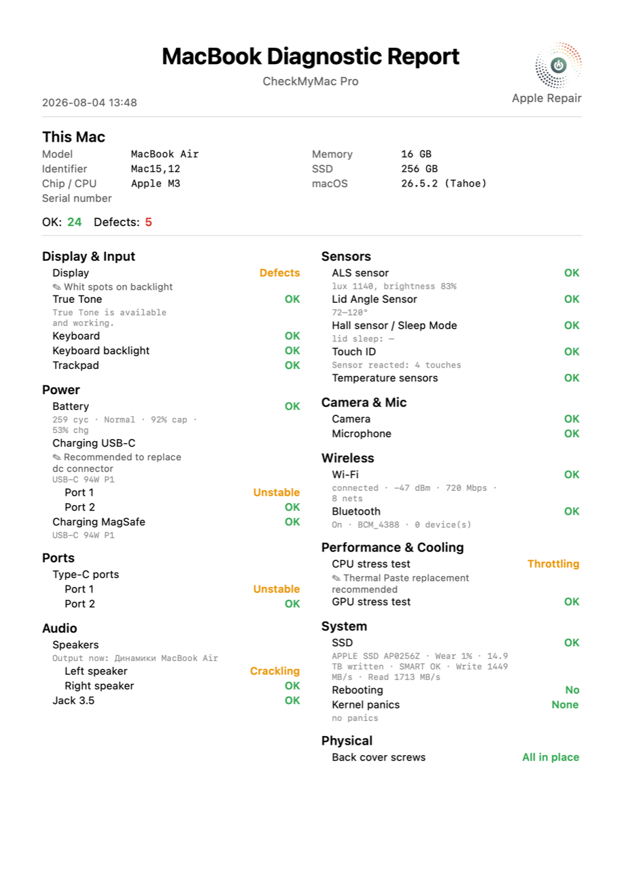
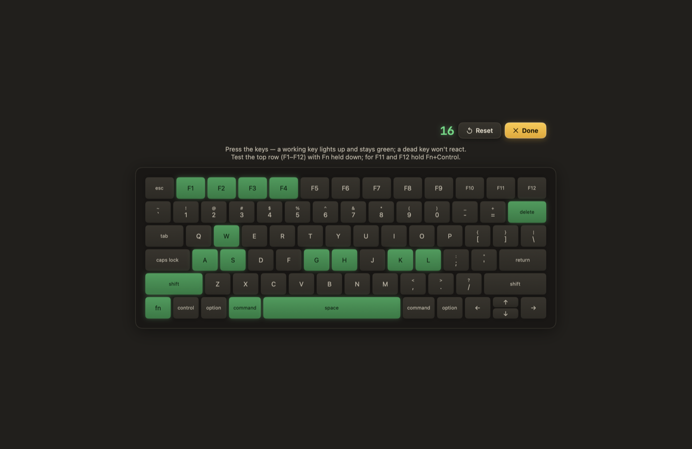
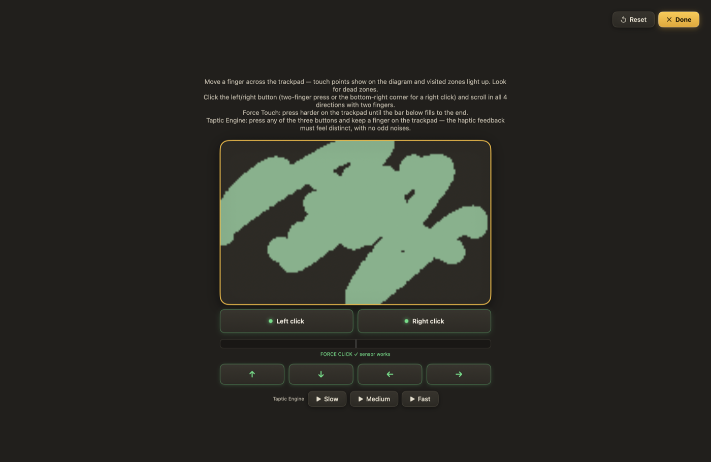
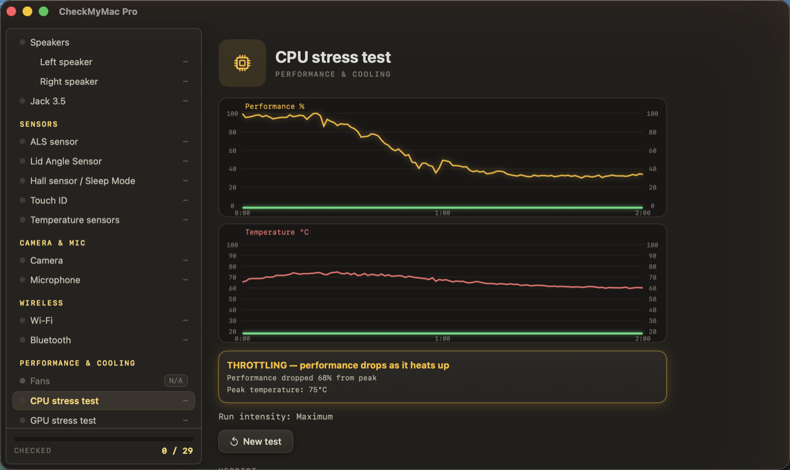
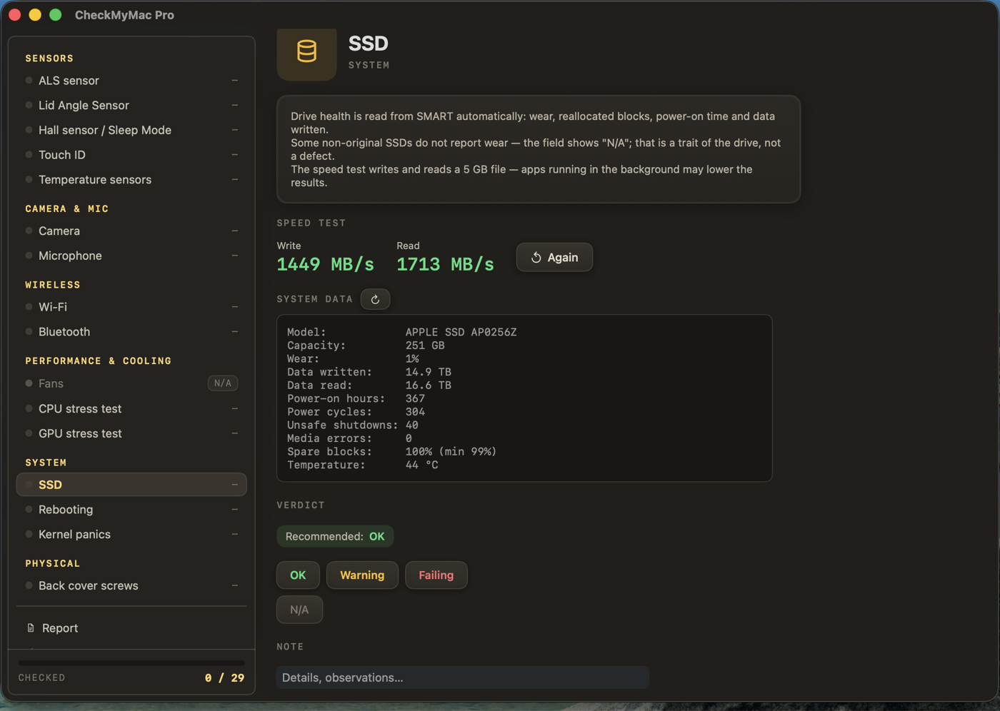
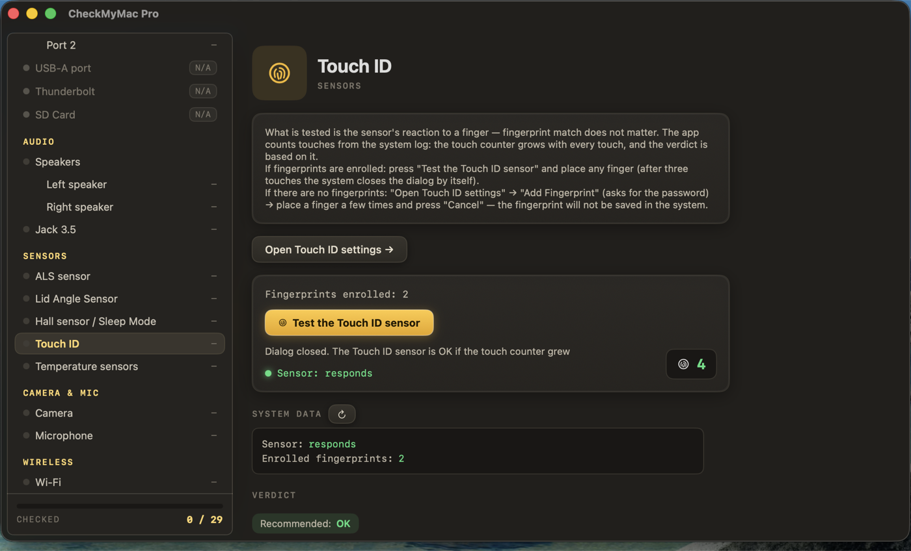

Free НАВСЕГДА
- 19 проверок — навсегда, без ограничений
- Живая проверка портов: USB-C, USB-A, зарядка
- Дисплей, клавиатура, трекпад + Force Touch
- Живой тест Touch ID, камера, микрофон
- Wi-Fi, Bluetooth, джек, True Tone
CheckMyMac Pro прощупывает макбук насквозь: батарея, порты, датчики, Touch ID, температуры — а в конце отдаёт PDF-отчёт. Программу написал сервисный центр по ремонту Apple для тех, кто покупает, продаёт или чинит маки. Бесплатная версия — навсегда, без регистраций и пробных сроков.
НОТАРИЗОВАНО APPLE · РАБОТАЕТ ОФЛАЙН · ДАННЫЕ ОСТАЮТСЯ НА МАКЕ
| Система | Что проверяется | Примечание |
|---|---|---|
| БАТАРЕЯ | Циклы, реальная ёмкость, здоровье батареи и работа зарядки — и по USB-C, и по MagSafe. | пороги сервиса |
| ПОРТЫ | Каждый порт проверяется вживую: воткните что угодно — порт загорится на схеме. Мёртвому или глючному порту спрятаться негде. | живая проверка |
| ДАТЧИКИ | Температуры, вентиляторы, датчик света, угол крышки, датчик сна — показания идут прямо с железа, аномалии подсвечиваются. | сырые данные |
| TOUCH ID | Сенсор проверяется живьём: программа считает каждое касание пальца. Работает даже на свежестёртом маке, где нет ни одного отпечатка. | отпечатки не нужны |
| SSD | Весь SMART как на ладони: износ, переназначенные блоки, записанные терабайты. Плюс честный замер скорости, который пробивает кэш. | без root и утилит |
| ЗВУК | Левый и правый динамики по отдельности, свип и музыка. Программа прямо показывает, куда сейчас уходит звук. | каналы порознь |
| СТРЕСС | Стресс-тесты CPU и GPU с живым графиком троттлинга. Мак, который задыхается под нагрузкой, выдаст себя за пару минут. | минуты, а не часы |
| ОТЧЁТ | Аккуратный PDF с вердиктом по каждому пункту. Для сервисов — сравнение «до и после ремонта» и номер заказ-наряда. | № заказ-наряда |
В ЧЕК-ЛИСТЕ 31 ПУНКТ · ПОДСТРАИВАЕТСЯ ПОД КАЖДУЮ ИЗ 72 МОДЕЛЕЙ MACBOOK






Бесплатная версия — навсегда: открыты 19 проверок из 31, без аккаунтов и пробных таймеров. Полная открывает все тесты и PDF-отчёт.
$19
Купить или продать мак без сюрпризов
$39
Для сервисов и тех, кто перепродаёт маки
Бесплатной версией можно пользоваться уже сегодня, продажи полных откроются со дня на день. Напишите нам — позовём первыми.
19 проверок из 31 открыты насовсем: живая проверка портов, дисплей, клавиатура, трекпад с Force Touch, Touch ID, камера, микрофон, Wi-Fi, Bluetooth, зарядка и другие. Полная версия добавляет батарею, SSD, динамики, стресс-тесты, остальные датчики и PDF-отчёт. Никакого пробного срока: бесплатное не отключится никогда.
Не страшно. Программа нотаризована Apple, ничего не меняет на диске, не сохраняет отпечатки, не ставит драйверов и обходится без интернета. Она только читает показания железа и показывает их вам — и всё.
DMG подписан сертификатом Apple Developer ID и прошёл нотаризацию Apple. Файл раздаётся с GitHub по HTTPS, а Gatekeeper сверяет подпись при первом запуске.
MacBook, MacBook Air и MacBook Pro на macOS 10.15 Catalina и новее — и Intel, и Apple Silicon. В базе 72 модели: программа сама узнаёт мак и собирает чек-лист под него.
Бесплатной версии — вообще никогда. Платная выходит в сеть один-единственный раз, чтобы активировать ключ. Дальше всё работает офлайн — хоть на маке, который никогда не видел Wi-Fi.
Программа сама проверяет обновления и ставит новую версию в один клик. Обновления бесплатны для всех.
Русский и английский: интерфейс, инструкции тестов и PDF-отчёты.
Начните с бесплатной версии — она не истекает и сразу покажет, как программа ведёт себя именно на вашем маке. Если купили полную и она всё-таки не подошла — напишите нам в течение 14 дней и расскажите, что не так. Деньги вернём, лицензия погаснет.
Программа родилась внутри крупного сервиса по ремонту техники Apple: выросла из чек-листа, по которому там проверяют каждый входящий макбук. Издаёт и развивает её частный разработчик.